Case 01 · Full brand, 2026
An AI workforce for your manufacturing back office
- Intelligence
- Sales
- Procurement
- Financial
- Role
- Growth & Design Intern
- When
- Jun to Sep 2026
- Company
- AI for manufacturing, pre‑Series A
- Scope
- Brand, site, product UI, decks, conference kit
- Live
- galvant.ai
The job
I designed the brand and ran the outbound it had to win.
Galvant builds AI for the back office of manufacturing companies. I joined ahead of its Series A with two jobs at once: design what customers and investors would see, and bring in new customers myself.
So I was on calls with plant general managers, contract manufacturers, and finance leads in about ten countries, and then designing for those same people the next morning. What I heard on calls went straight into the work.
- ~200conversations with manufacturers
- $100K+pipeline from 5 qualified opportunities
- ~10countries across the Americas, Europe, and Asia
The rename
From Takt to Galvant.
The company had to change its name for legal reasons, and the team landed on Galvant together: part galvanize, part gallivant. The energy of a factory floor, and the ease the product should bring to it.
A new name was the chance to fix everything around it. The old site was a heavy green sans serif on a busy background, and it looked like every other software startup. I rebuilt the identity to look like it belonged in manufacturing: a serif with weight, drafting-style measurement lines, and one confident orange.
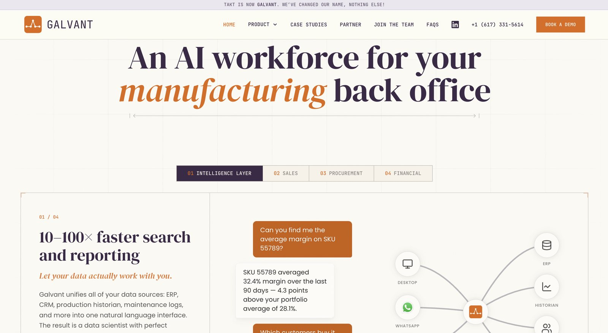
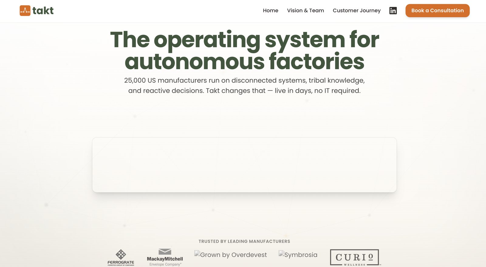
Takt, before Galvant, after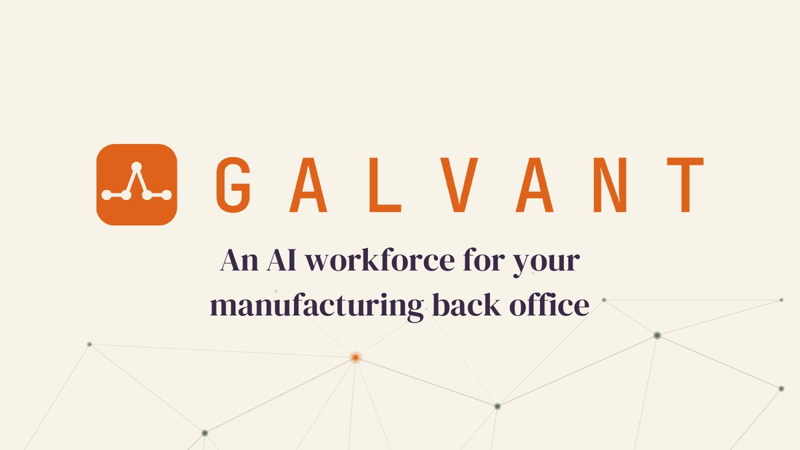
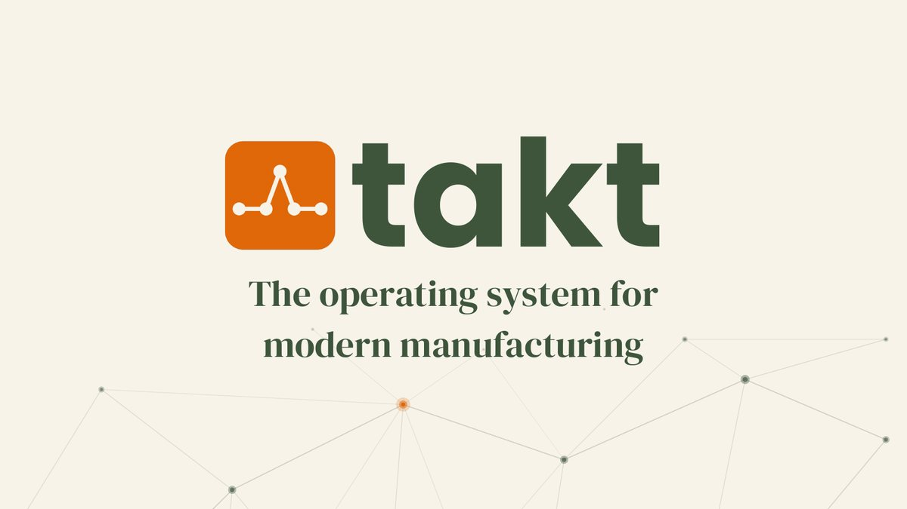
Takt deck Galvant deckWhat I heard, what I changed
"Sure, but can you handle our process?"
That was the reaction I kept getting. People were interested but skeptical, because every corner of manufacturing has its own discipline and its own methods. A rubber molder does not believe a tool built for a nursery will work for them.
So I made case studies the backbone of both the site and the decks. Each product page now leads with a real customer in a specific trade, and the deck walks through a range of them, so a prospect can find a company that looks like theirs.
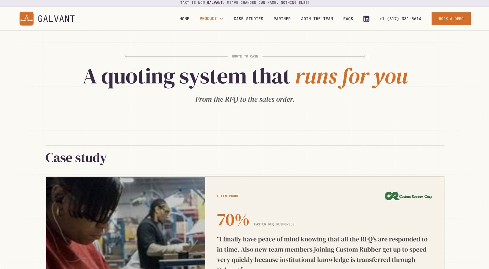
In the product
Making usage visible, so people come back.
Getting a customer live is half of it. They also have to keep using the thing. Under the main chat bar we added usage stats for the whole company: total questions asked this month, and who on the team is asking the most.
It turns a quiet tool into something a little competitive, and it gives a plant manager an easy read on whether their team has actually adopted it.
I can't show that screen here because it holds private client information. The image below is the public demo of the same product.
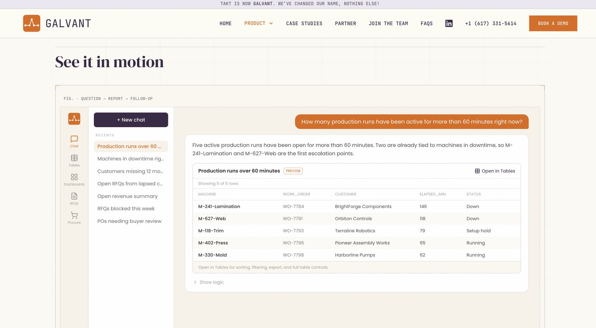
A direction I dropped
Click-through, not a looping video.
For quoting and procurement I first planned looping videos, like the one on the Intelligence page. I scrapped that. A loop long enough to show every skill would be too long to watch, and a short one would undersell it.
I built a step-by-step walkthrough instead. The visitor clicks through seven steps at their own pace, which holds attention better and lets each capability get its own moment.
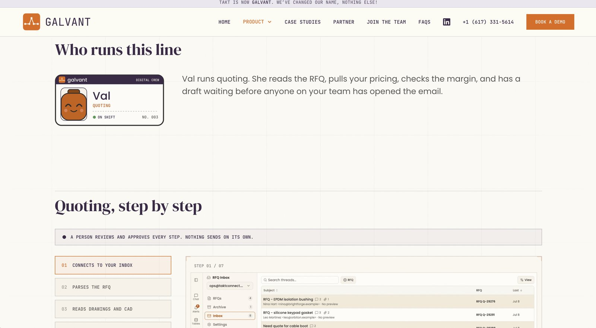
Design in the funnel
No single piece closed a deal. The sequence did.
What worked was using everything in order. I sent a lead to the site before the call, ran a live demo on the call, and followed up with the customer deck after it.
-
Getting noticed
Webinar and conference kit
A webinar that teaches before it sells, and a banner and cards that say what Galvant does in one line.
-
Before the call
The website
Where I pointed every lead first, so they arrived knowing the product and having seen a company like theirs.
-
On the call
The product demo
A live walk through the product, asking it real questions.
-
After the call
The customer deck
The follow-up they could forward inside their company: the product, the proof, and a two-week path to going live.
The pieces
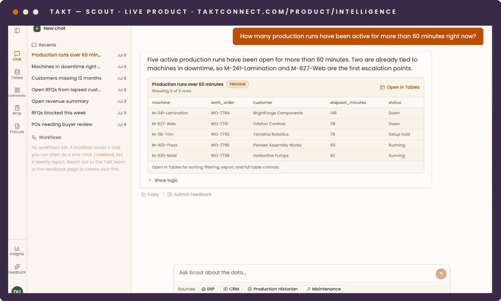
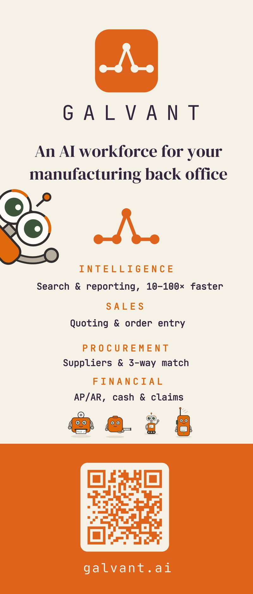
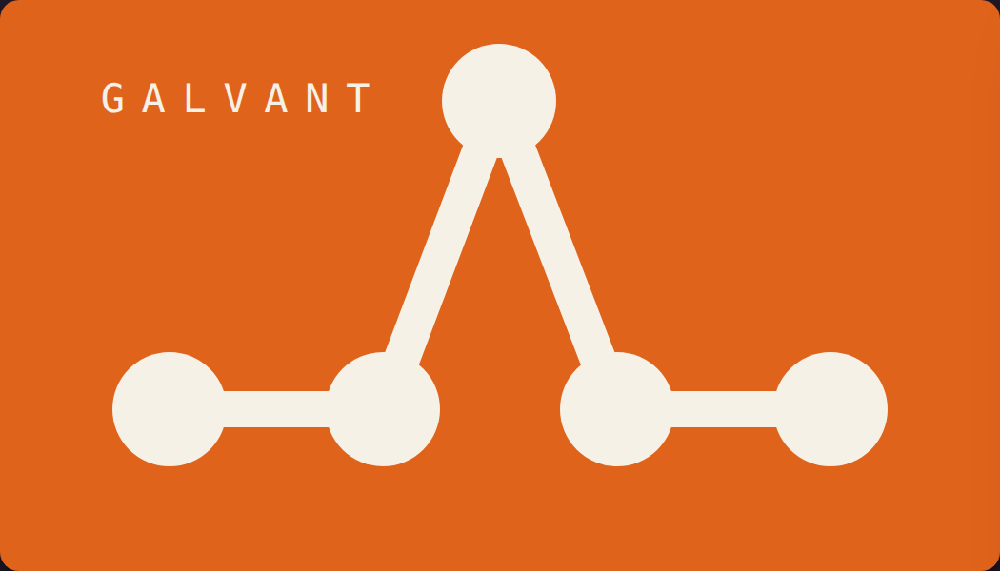
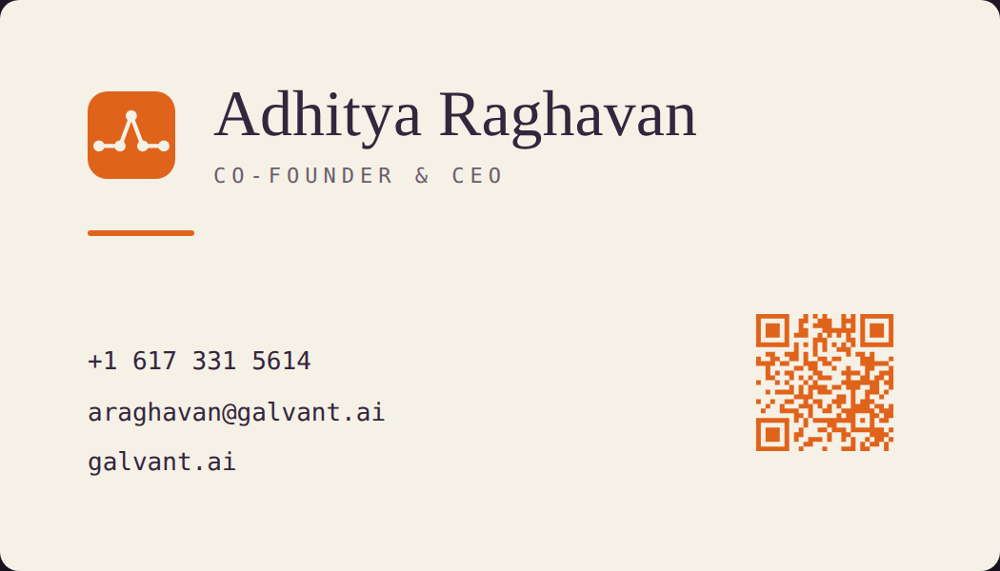